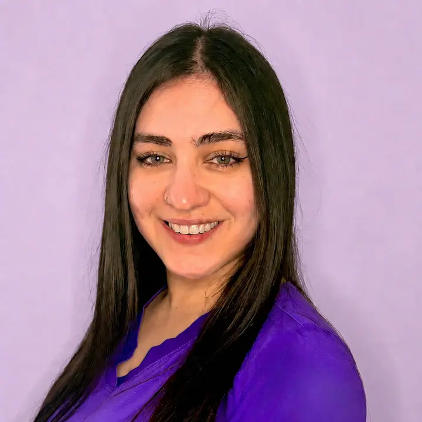

Nutrición ciclo femenino
Acompañamiento nutricional según las distintas etapas del ciclo menstrual, síntomas, energía, apetito y bienestar hormonal.
Atención personalizada y basada en evidencia para salud femenina, fertilidad, embarazo, lactancia, menopausia y salud digestiva.

Soy Paulina Lagos Rojas, nutricionista titulada con distinción por la Universidad Andrés Bello, con mención en Gestión y Calidad.
Mi experiencia abarca la atención nutricional a lo largo del ciclo vital, la dietoterapia en distintas patologías y el acompañamiento en lactancia y alimentación complementaria. También he diseñado y ejecutado programas de nutrición escolar y comunitaria, promoviendo hábitos saludables mediante educación, talleres y seguimiento personalizado.
Trabajo desde la evidencia, la escucha y objetivos realistas, para construir contigo un plan que se adapte a tu salud, tu etapa de vida y tu rutina.
Acompañamiento profesional adaptado a tus objetivos, antecedentes de salud, síntomas digestivos y etapa de vida.
Acompañamiento nutricional según las distintas etapas del ciclo menstrual, síntomas, energía, apetito y bienestar hormonal.
Plan nutricional personalizado para apoyar la salud hormonal, metabólica y digestiva, considerando síntomas y objetivos individuales.
Evaluación nutricional, educación alimentaria y planificación personalizada para mejorar hábitos, composición corporal y salud metabólica.
Orientación para apoyar la lactancia, resolver dudas frecuentes e iniciar la alimentación complementaria de forma segura y respetuosa.
Acompañamiento en la implementación, seguimiento y reintroducción de alimentos dentro del protocolo bajo en FODMAP.
Manejo nutricional para síntomas y condiciones digestivas, con recomendaciones prácticas según diagnóstico y tolerancia individual.
¿No sabes cuál atención se ajusta mejor a ti?
Cuéntame qué necesitasDesde el primer mensaje sabrás qué esperar y cómo avanzaremos juntas.
Cuéntame qué tipo de atención buscas y revisamos los horarios disponibles.
Definimos la modalidad online o presencial y confirmamos tu reserva.
Revisamos antecedentes de salud, alimentación, síntomas, rutina y objetivos.
Recibes recomendaciones personalizadas, realistas y posibles de aplicar.
Artículos de Paulina Lagos sobre nutrición clínica, salud femenina y hábitos sostenibles, presentados en formato editorial.
Cargando publicaciones…
Explora recetas con fotografías, ingredientes, preparación, información nutricional, alérgenos y filtros según tus preferencias.
Busca por ingrediente, filtra tus preferencias y revisa cada preparación sin desplazamientos dobles.
Abrir el recetario gratisPuedes buscar por ingrediente, filtrar por comida o preferencia y descargar el recetario en PDF desde la aplicación.
No. Atiendo consultas de nutrición clínica y femenina sin receta previa, con foco en tu salud integral.
Escríbeme directamente por WhatsApp para consultar los horarios disponibles y reservar tu atención nutricional.
Puedes atenderte online desde cualquier lugar de Chile o de manera presencial en Marchigüe.
La evaluación nutricional inicial tiene un valor de $30.000 y los controles posteriores de $25.000.
Revisión de antecedentes, alimentación, síntomas, rutina y objetivos, además de recomendaciones adaptadas a tu realidad.
Consulta los horarios disponibles y conversemos si tienes dudas antes de comenzar.